Case study
Shift Left: warehouse-to-lakehouse migration
Migrated a B2B payments fintech’s 200+ TB, 2,000+ model Redshift warehouse to a Starburst + Apache Iceberg lakehouse via a zero-repoint hot swap: automated Trino SQL translation, a self-rebasing transition branch, and per-object parity validation gated the cutover end users never noticed.
~50×
faster critical Finance query
150 → 26
orchestration jobs (−80%)
0
cluster reboots since cutover
Starburst / TrinoApache IcebergdbtAmazon RedshiftAWS Glue + S3GitLab CIParadimeTableau
Companion repository: anonymized migration patterns, including the translation layer, transition-branch automation, and Tableau migration tracker, at github.com/dymytryo/warehouse-to-lakehouse-migration.
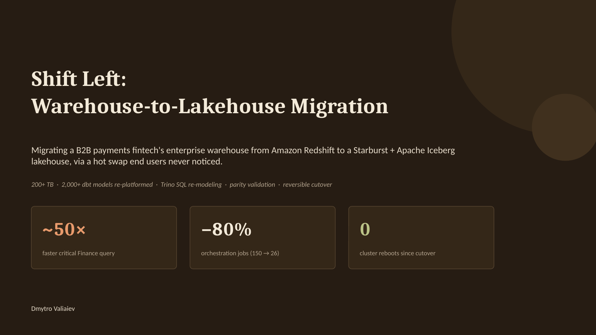
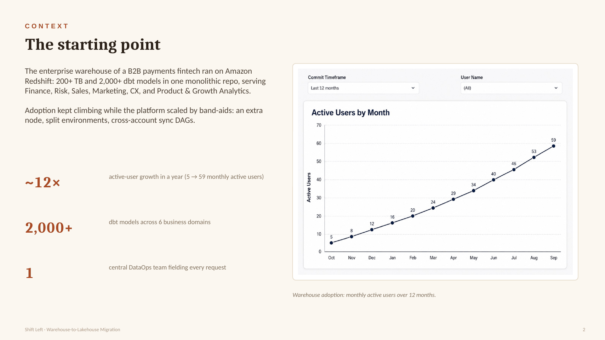
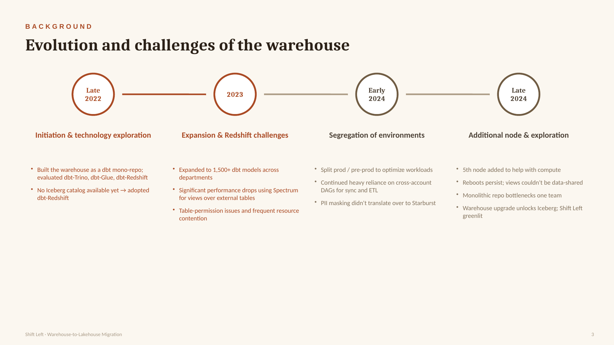
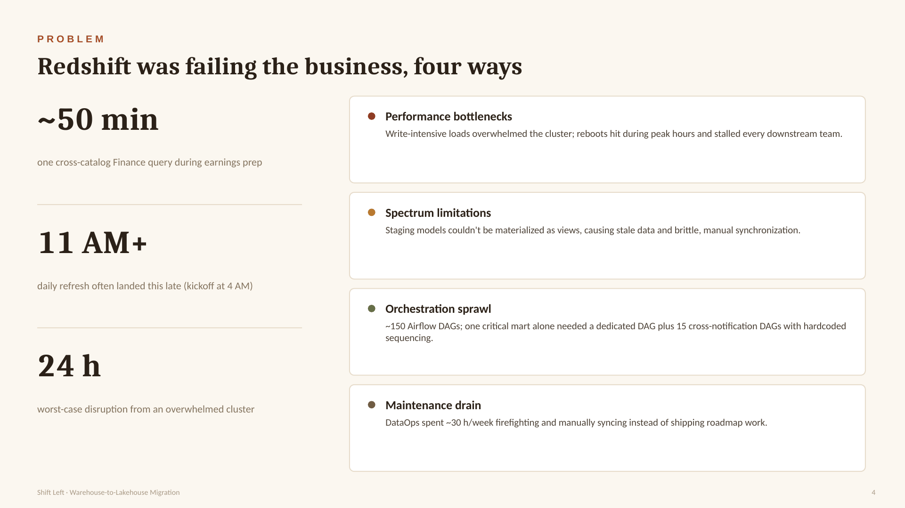
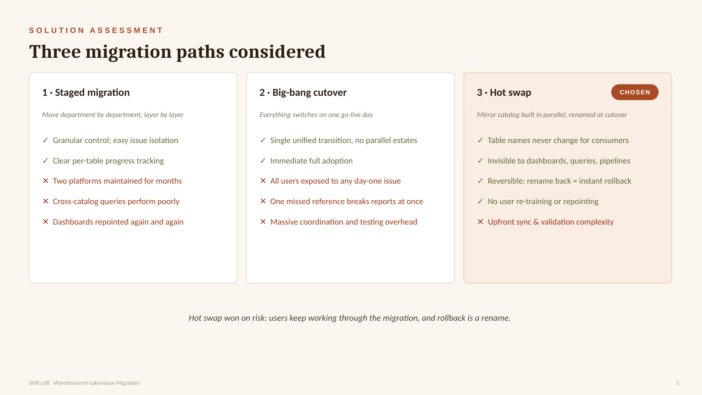
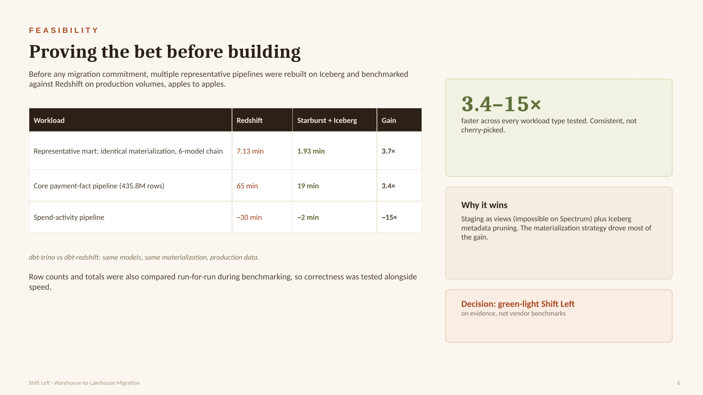
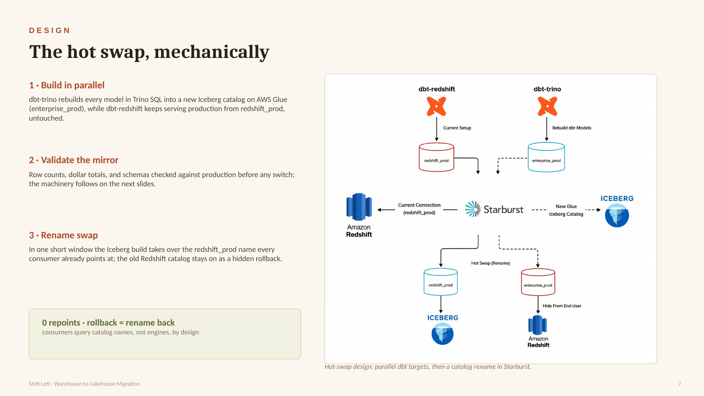
Repo companion
Implementation notes for the hot-swap architecture and migration control plane.
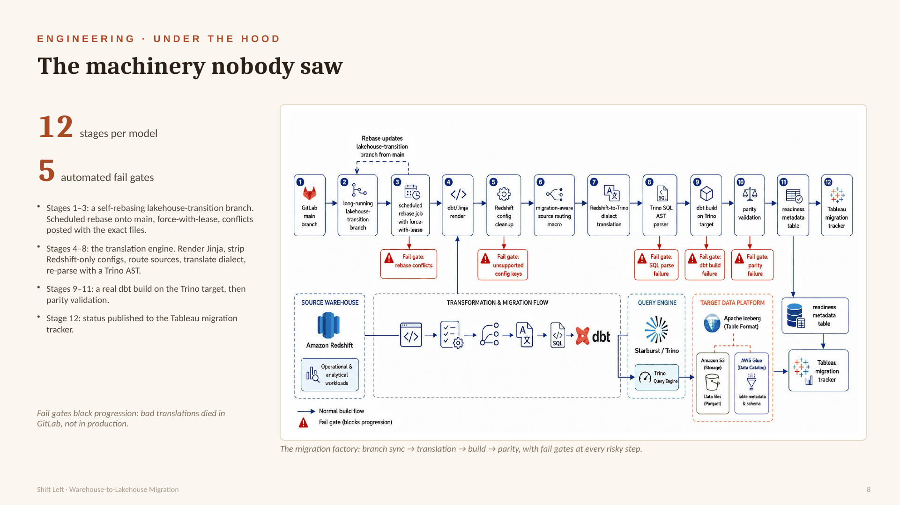
Repo companion
The migration factory broken into inspectable functional areas.
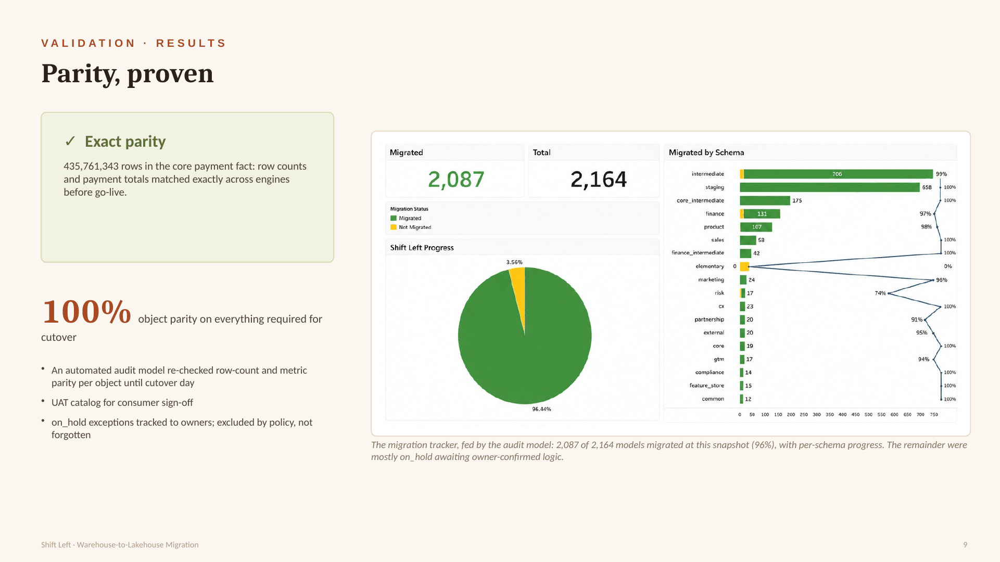
Repo companion
Tracker screenshot and SQL pattern for object-level migration status.
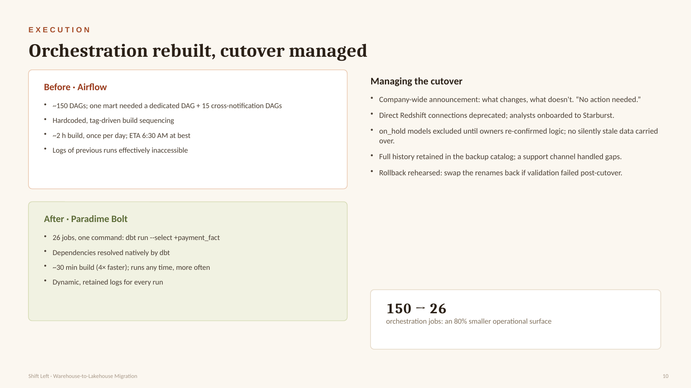
Repo companion
Scheduled transition-branch refresh and CI gate examples behind the cutover workflow.
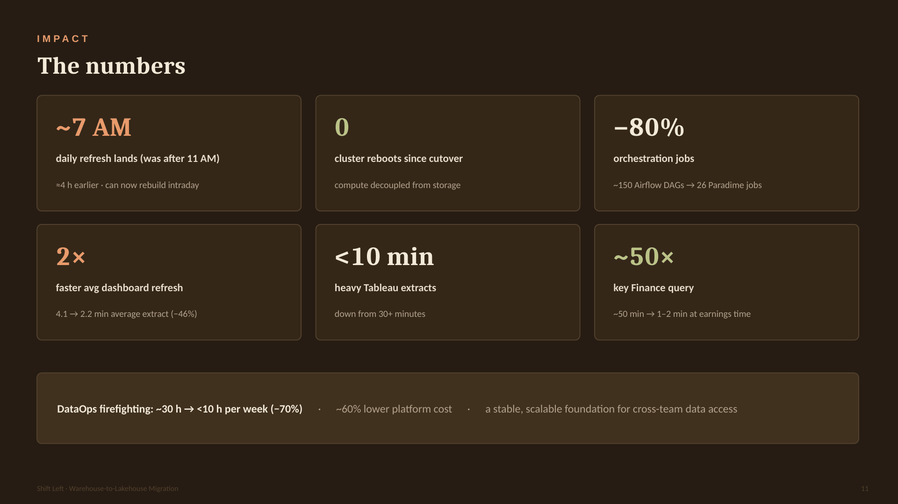
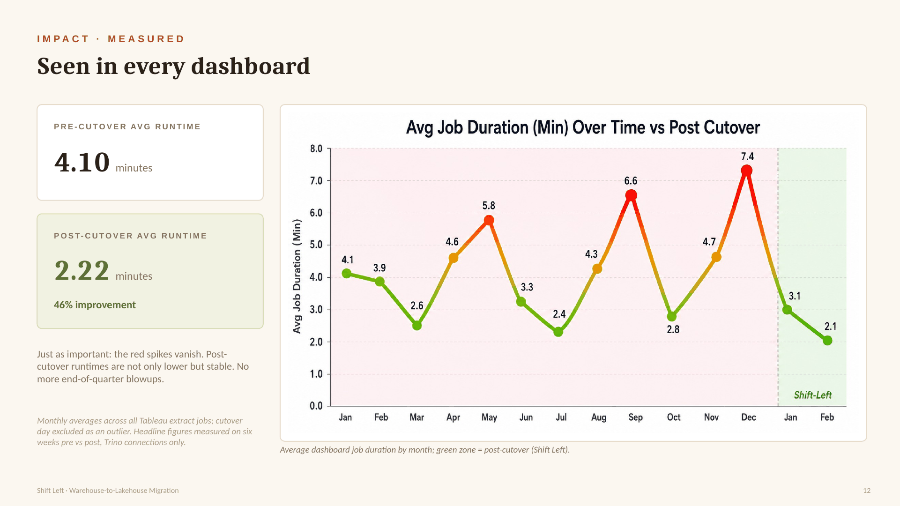
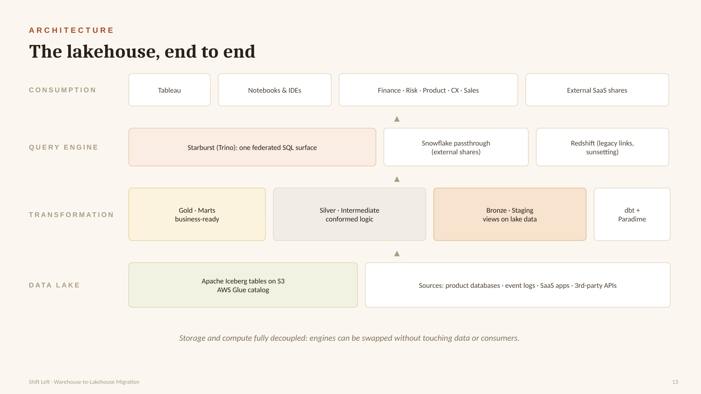
Repo companion
Mermaid source for the implementation-oriented warehouse-to-lakehouse architecture.
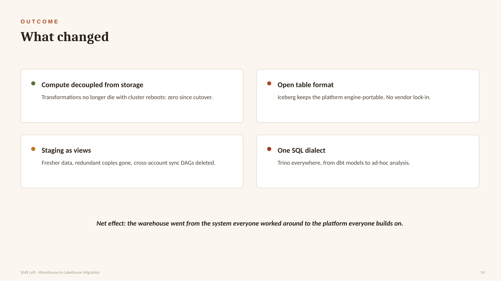
← All projects